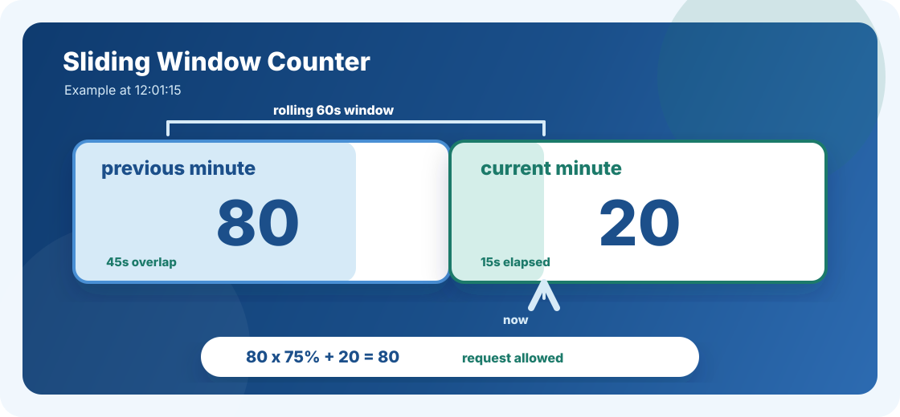

The Sliding Window Counter was designed specifically to solve the most well-known weakness of the Fixed Window Counter: boundary exploitation.
What Is Boundary Exploitation?
Suppose you allow 100 requests per minute. A user sends 100 requests in the last 2 seconds of the first minute, and then sends 100 more as soon as the next minute starts.
12:00:58 - 12:00:59 => 100 requests
12:01:00 - 12:01:01 => 100 requests
Total in about 3 seconds => 200 requestsThe Fixed Window Counter allowed all of it because the counter simply reset at the minute boundary. In just a few seconds, the user made double the allowed limit.
How Sliding Window Counter Works
In a distributed system, Redis is a common choice for storing rate-limit counters. When a user's first request arrives, we create a key for that user and that minute. We increment the counter for every request within that minute. When the next minute begins, we create a new key and start counting again.
At any point in time, we maintain two Redis keys per user:
- One key for the previous minute.
- One key for the current minute.
rate:user:123:12:00 => 80 # previous minute
rate:user:123:12:01 => 20 # current minute, 15 seconds inThe Weighted Calculation
Instead of checking only the current minute's count, we blend in a portion of the previous minute's count. The portion depends on how much of the previous minute overlaps with the rolling window.

Allowed limit = 100 requests per minute
Previous minute total = 80 requests
Current minute elapsed = 15 seconds
Current minute count = 20 requests
Overlap from previous minute:
= 60 - 15
= 45 seconds
= 75% of the previous minute
Estimated previous requests:
= 75% of 80
= 60 requests
Total estimated requests:
= 60 previous + 20 current
= 80 requests
80 < 100 => request allowedThis weighted blending assumes requests arrived uniformly throughout the previous minute. That is the source of the slight inaccuracy. In reality, requests may have arrived in a burst. But for most production systems, the approximation is accurate enough and much cheaper than storing every individual timestamp.
Pseudo Code
function allowRequest(userId, limit, windowSeconds):
now = currentTime()
currentWindow = floor(now / windowSeconds)
previousWindow = currentWindow - 1
currentKey = "rate:" + userId + ":" + currentWindow
previousKey = "rate:" + userId + ":" + previousWindow
currentCount = redis.GET(currentKey) or 0
previousCount = redis.GET(previousKey) or 0
elapsed = now % windowSeconds
previousWeight = (windowSeconds - elapsed) / windowSeconds
estimatedCount = (previousCount * previousWeight) + currentCount
if estimatedCount >= limit:
return false
redis.INCR(currentKey)
redis.EXPIRE(currentKey, windowSeconds * 2)
return truePros
- Eliminates boundary exploitation in most cases because users cannot easily game the minute boundary to double their allowed requests.
- Low memory usage because Redis stores only 2 keys per user, each with a single integer.
- No background jobs needed because Redis TTL automatically cleans up old keys.
- Fast because each request needs only two Redis reads and one write.
- Scales horizontally because the rate-limit state lives in Redis, not in application servers.
Cons
- Slight inaccuracy because the uniform distribution assumption is never perfectly true.
- More memory than Fixed Window because it stores two keys per user instead of one.
- Not suitable for exact counting needs such as billing, legal limits, or compliance-sensitive enforcement.
- Slightly more complex to implement because it needs two reads, a weighted formula, and more test coverage.
Where It Fits in Real Systems
- Cloudflare - Traffic and DDoS Management: At edge scale, Fixed Window can allow boundary bursts and Sliding Window Log can require too much memory. Sliding Window Counter gives a practical middle ground.
- Google Search Autocomplete: Every keystroke can fire an API request. Sliding Window Counter handles natural bursts without making the boundary problem worse.
- Uber - Price Estimate API: Dragging a map can create rapid estimate requests. Approximate rate limiting is acceptable for protecting this kind of endpoint.
- Zomato / Swiggy - Restaurant Search: Map scrolling and restaurant search create bursty API traffic, especially during peak hours. Two counters per user keeps memory manageable.
- Twitter / X - Timeline and Feed API: Aggressive scrolling can generate bursts of feed requests. Sliding Window Counter provides fair limiting without storing every request timestamp.
Final Thought
Sliding Window Counter is not perfectly accurate, but that is exactly why it is so useful. It gives you a strong balance between fairness, latency, memory usage, and implementation complexity. For most high-scale API rate limiting use cases, that tradeoff is hard to beat.
Back to all posts